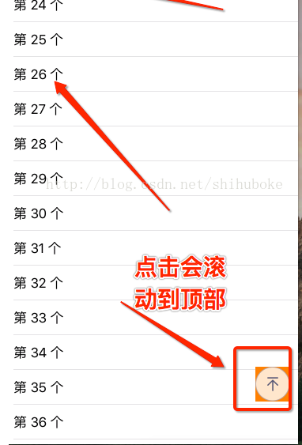

#import "ViewController.h"
@interface ViewController ()<UITableViewDelegate,UITableViewDataSource>
//全局tableView
@property (nonatomic,strong)UITableView *tableView;
//全局滚动按钮
@property (nonatomic,strong)UIButton *btnTop;
@end
@implementation ViewController
- (void)viewDidLoad {
[superviewDidLoad];
//添加tableView
[self.viewaddSubview:self.tableView];
//添加滚动按钮
[selfscrollTopView];
}
#pragma mark - 设置tableView
- (UITableView *)tableView{
if (!_tableView) {
_tableView = [[UITableViewalloc]init];
_tableView.frame =CGRectMake(0,64,self.view.frame.size.width , self.view.frame.size.height);
_tableView.backgroundColor = [UIColorlightGrayColor];
_tableView.delegate =self;
_tableView.dataSource =self;
_tableView.separatorStyle =UITableViewCellSeparatorStyleSingleLine;
}
return_tableView;
}
#pragma mark - tableView 数据源-
//共多少组
-(NSInteger)numberOfSectionsInTableView:(UITableView *)tableView{
return 1;
}
//每组有多少行
-(NSInteger)tableView:(UITableView *)tableView numberOfRowsInSection:(NSInteger)section{
return 100;
}
//每行显示的内容
-(UITableViewCell *)tableView:(UITableView *)tableView cellForRowAtIndexPath:(NSIndexPath *)indexPath{
//创建标识符
staticNSString *cellId =@"cellid";
UITableViewCell *cell = [tableViewdequeueReusableCellWithIdentifier:cellId];
//缓存池
if (!cell) {
cell = [[UITableViewCellalloc]initWithStyle:UITableViewCellStyleSubtitlereuseIdentifier:cellId];
}
//标题
cell.textLabel.text = [NSStringstringWithFormat:@"第 %ld个",(long)indexPath.row];
return cell;
}
//创建滚动顶部按钮
- (void)scrollTopView{
_btnTop= [[UIButtonalloc]init];
_btnTop.frame =CGRectMake(self.view.bounds.size.width -54,self.view.bounds.size.height -98, 44, 44);
//添加图片
[_btnTopsetImage:[UIImageimageNamed:@"icon_up"]forState:UIControlStateNormal];
//设置先隐藏
_btnTop.hidden =YES;
//设置背景颜色方便测试
[_btnTopsetBackgroundColor:[UIColororangeColor]];
//监听
[_btnTopaddTarget:selfaction:@selector(btnClick)forControlEvents:UIControlEventTouchUpInside];
//添加视图
[self.viewaddSubview:_btnTop];
}
#pragma mark
- (void)scrollViewDidScroll:(UIScrollView *)scrollView{
//动态计算高度
CGFloat gap =self.tableView.contentOffset.y - scrollView.frame.size.height *1.5;
if (gap <0) {
//设置小于0隐藏
self.btnTop.hidden =YES;
} else {
//设置大于0显示
self.btnTop.hidden =NO;
}
}
- (void)btnClick{
//回到顶部
[self.tableViewsetContentOffset:CGPointZero];
}
@end